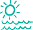

Школа серфинга на канарских Островах

ПРОЖИВАНИЕ
.jpg)
ПЕРЕЛЕТ И
СТРАХОВКУ
ОБУЧЕНИЕ И
ЭКИПИРОВКУ
Школа серфинга на канарских Островах
Канарские острова не случайно называют европейскими Гавайями – это идеальное место для поклонников серфинга: стабильный теплый ветер круглый год, песчаные пляжи, километры нетронутых просторов и прозрачное море. А настоящей Меккой для серфингистов становится Фуэртевентура – второй по величине остров архипелага.
Именно здесь лучшее в Испании место, в котором можно пройти обучение серфингу. Кроме того, что зимой и осенью сюда приходят огромные атлантические волны, Фуэртевентура может похвастать и множеством мелководных спокойных лагун, отлично подходящих для обучения начинающих серфингистов.
Серфинг на Канарских островах доступен круглый год – и волны, и подходящая погода здесь есть всегда. Причем волну, подходящую по уровню, сможет найти и настоящий профи, и новичок. Не случайно считается, что именно это место лучше всего подойдет для обучения здесь возможно без сложностей переходить на новый уровень.
Перечисляя достоинства, нельзя обойти и то, что пляжи Фуэртевентуры самые протяженные на Канарах. В итоге невозможно представить их переполненных туристами. Вы столкнетесь только с теми, кого,как и вас, будет интересовать одна цель – обучение серфингу.
Пока что вы только хотите понять, что такое серфинг, или уже испытали всю прелесть катания на волнах, но желаете поднять свой уровень? Наша школа серфинга сможет предложить обучение для любого уровня подготовки.
Четыре часа увлекательных занятий в день помогут вам уверенно покорять волны, почувствовать себя настоящим серфингистом.
Основные достоинства нашей русской школы – высокое качество преподавания и организации занятий, безопасность (все наши клиенты застрахованы в компании Allianz), отличный инвентарь и экипировка (предоставляется на весь курс обучения), в том числе мягкие безопасные доски для начинающих.
Сначала мы определяем уровень катания и физической подготовки и только потом составляем программу подготовки. И можем заверить, что после того, как закончится обучение, вы не только получите массу великолепных ощущений, но и это уровень поднимется на новую ступень.
ПРОЖИВАНИЕ
ПЕРЕЛЕТ И
СТРАХОВКУ
ОБУЧЕНИЕ И
ЭКИПИРОВКУ